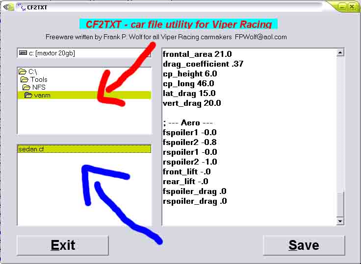

Step 7: Preparing Performance
This is the lengthy part. You first need to open cf2txt.
Where the RED arrow is, you browse to the folder your working in.
Where the BLUE arrow is, you click the .cf file.

A list of variable show up on the right side. Click the Gigantic Save button to save it as a txt.
Close out cf2txt, and open your text file in notepad.
You will see a bunch of variables (there will be a LOT!)
Each one of these sets up the car. Matt has a LONG detailed explanation for every variable in the CF file (or the txt in this case) and a couple tips on making the torque/HP curve right. So here's matt.
The torque
curve might tend to look a bit flat but one need to remember that the whole
diagram is pretty flat itself and that it is you that has to move things around
(unfortunally) to get a more realistic result. When it comes to theese curves I
personally think the most important thing it to get the curves to look realistic
since looking at them this is what you will get in the game no matter what
numbers are there...
When it comes to the power curves... I'm not sure. Since it IS a game a car
might have 20.000 Hp at 0 rpm which would be impossible IRL because of the
reason you mentioned.
I would prefer:
1. Realistic performance no matter what curves or numbers.
2. Similar curves instead of exact peaks (however it is not very hard to get
both most of the times)
3. Exact peaks as a third priority, after all, you can't see if it is exact or
not.
When it comes to the weight issue, fuel consumption and re-fueling was never
implemented ( ) so you need to add weight for fuel aswell. A standard Viper GTS
carry 19 gallons of fuel fully loaded which means about 70 kilos? You have to
decide for yourself if you want to drive the car with a full, average or low
fuel load. A driver could weigh anything between... uhm... well he or she could
weigh anything really.
The inertias can be calculated in the following way:
mx = weight/12*((length^2)+(height-((wheel width/12)/2+(wheel height%*((wheel
widht/1000)*3,280851))))^2)
my = weight/12*(length^2+width^2)
mz = weight/12*((width^2)+(height-((wheel width/12)/2+(wheel
height%*((weight/1000)*3,280851))))^2)
And here are some hex explainations (I will only explain a few of them):
14 Total weight (avoir pounds)
18 inertia mx
1c inertia my
20 inertia mz
24 overall width (inches)
28 overall height (inches)
2c front track (inches)
30 rear track (inches)
44 wheelbase (inches)
48
front weight distribution (%) More weight in the rear end will give the car more
grip but will make the rear end brake out more easily and faster. If the car
isn't correct setup otherwise, too much rear weight will give the car erratic
handling and very dangerous handling at higher speeds.
34 front ground clearance, minimum (inches)
38 front ground clearance, maximum (inches)
3c rear ground clearance, minimum (inches)
40 rear ground clearance, maximum (inches)
5c idle speed (rpm)
54 maximum torque (lbs/ft)
58 torque peak (rpm)
4c maximum engine power (hp)
50 power peak (rpm)
60 rpm limiter kicks in at (rpm)
64 engine inertia (milliseconds) This feature affect the engine response but
also the time it takes for the engine to start.
68 engine drag coefficient. For an example, if this value is too high you will
encounter a wheel lock if you release the throttle. This has to be set until you
feel the engine drag is realistic for that specific car.
6c fuel consumption (US gallons/100 km?)
70 fuel capacity (US gallons)
e4 front/ rear torque balance (1.0 = 100% rear, 0,0 = 100% front)
e8 front diffrential stiffness. I set this value high if I want a FWD car spin
on both tires instead of just one.
ec rear diffrential stiffness. I set this value high if I want a RWD car to spin
on both rear tires instead of just one.
f0 central diffrential stiff. I set this value high if I want a 4WD car spin on
all four tires.
11c number of gears (3-6)
dc rear end final drive ratio, minimum
e0 rear end final drive ratio, maximum
f4 transmission inertia. This value can be useful to set exact acceleration.
f8 transmission drag. This is VERY useful to set exact acceleration to a car
since it affects the acceleration over a wide register.
120 front springs stiffness, minimum
124 rear springs stiffness, minimum
150 front springs stiffness, maximum
154 rear springs stiffness, maximum
128 front bump, minimum
12c rear bump, minimum
158 front bump, maximum
15c rear bump, maximum
130 front rebound, minimum
134 rear rebound, minimum
160 front rebound, maximum
164 rear rebound, maximum
138 front sway, minimum
13c rear sway, minimum
168 front sway, maximum
16c rear sway, maximum
140 front camber angle, minimum
144 rear camber angle, minimum
170 front camber angle, maximum
174 rear camber angle, maximum
148 front toe-in angle, minimum
14c rear toe-in angle, minimum
178 front toe-in angle, maximum
17c rear toe-in angle, maximum
180 caster
184 anti dive
188 anti squat
18c front bump camber angle
190 rear bump camber angle
194 front bump toe-in angle
198 rear bump toe-in angle
1ac height (cm)
1b0 wheel lock angle
1b4 front average tire width (mm)
1b8 front tire height procent (% of above width)
1bc front rim diameter (inches)
1c0 rear average tire width (mm)
1c4 rear tire height procent (% of above width)
1c8 rear rim diameter (inches)
1dc front brake effect, minimum
1e0 rear brake effect, minimum
1e4 front brake effect, maximum
1e8 rear brake effect, maximum
1ec rolling resistance (this can be used to give the car realistic rolling
resistance but most of all you can use it to cut the topspeed if needed)
1f4 frontal area (square feet). You will have to search for real life figures
for this one. A standard Viper GTS = 19,3 a Viper GTS-R = 20,5 a Porsche GT2 =
21 etc etc.... Higher value will create more drag resistance but will also
create more downforce.
200 drag coefficient (search for real life figures for this one. Higher value
means more drag ofcourse.)
1f8 drag center point height. Higher value will generate more pressure but at a
certain point will **** up the cars aerodynamics making it fly up in the air
(the air under the car will lift it up in the air)
1fc drag center point longitudal. A higher value will give the same result as
yaw control. I best kept between let's say 50-53 maximum to keep the handling
realistic
204 lateral drag (sides of the car)
208 vertical drag (under/over the car)
214 front spoiler, minimum (lift coefficient)
21c front spoiler, maximum (lift coefficient)
218 rear spoiler, minimum (lift coefficient)
220 rear spoiler, maximum (lift coefficient)
20c front lift coefficient (at 200 Kph)
210 rear lift coefficient (at 200 Kph)
224 front spoiler drag coefficient (how much drag will be generated by the front
spoiler)
228 rear spoiler drag coefficient (how much drag will be generated by the rear
spoiler)
Well, that's all for now. It is better to contact me with problems you're
encountering, then I will be able to explain exactly what need to be changed. It
is a drag to explain what all this stuff do to the performances... even if you
know it by heart. Good luck and keep up the work!
/Matt
Now that you have read his sermon, you are ready to start the TXT edits.
Take the specs of your car, and get them up. You are going to replace every variable in the CF that you can with the information you have. Try to remain realistic when creating your car (that includes tuned cars).
If you need to convert any measurements from Metric to Imperial, go to http://www.onlineconversion.com/.
For the mx, my, and mz, you can either use the formula provided by Matt, or the Excel spreadsheet created by Bloodyludy, which you can get here.
Once you are done, click Save, and close Notepad.
Go to your command prompt (perhaps by now you have a shortcut to it in your working folder), and type in, mkcar yourfile.txt yourcar.cf (obviously replace yourfile and yourcar with the actual file names).
Once you are done setting up the CF, you can move ONWARD.